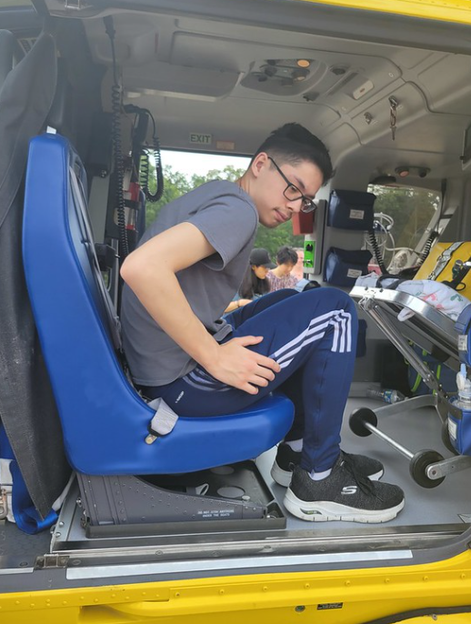

Activities at the Udvar-Hazy Center
The various activities I did whilst I was at the center included food and walking. Lots of walking. For the first part, I visited some cessnas> I already said that on the previous page. But the very next thing I did was take a look at some of the helicopters that were parked or landed whatever you call it on the grass to the side. Sitting in front of me was a police chopper used in chases and patrol, as well as a medic copter used for EMS and One more I forgot the name of but is used for coast guard rescue. I got permission to sit actually in the Rescue chopper which you can see below and to say it was cramped is an understatement. I don't know how they fit anybody in this thing, much less three people in the back. It was full of metal and other hard surfaces in there, probably because of bodily fluids and the fact that very dirty people and men will be sitting in here during flights. The second copter I got to sit in is the police one and while there is no picture of this one, I got to sit in the front and see exactly where they operate the spotlight and camera and various other tools used in chases and patrol. It's pretty easy to see why people love doing this as their job because it is really cool, flying just a couple hundred feet above the ground flying fast at 100+. Overall the helicopter section of the travel visit was easily one of my top 3, and I would absolutely do it again if I had the chance, although the 3rd copter was really not that much fun. Overall, the helicopter section of the travel visit was easily one of my top three experiences, and I would absolutely do it again if I had the chance, although the third copter was really not that much fun at all.
